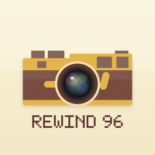

A 90s film camera in your pocket. Six retro cameras, a real-time preview, and that orange date stamp. Pay once and every camera is yours.
Contact · FAQ · Privacy Policy
Found a bug, have a question, or want to suggest a new camera? Email us. We usually reply within a few days.
Are there any in-app purchases or subscriptions?
No. You pay once and all six cameras are included, along with future updates. There are no ads, no photo limits and no watermarks.
Where are my photos saved?
Every shot is saved to your Photos app. If you'd rather choose which ones to keep, turn off “Save every shot to Photos” in Settings and save your favorites from the gallery.
Photos aren't being saved.
Rewind 96 needs permission to add photos. Open the iPhone Settings app → Rewind 96 → Photos and choose “Add Photos Only” or “Full Access”.
The viewfinder is black.
Camera access may be off. Open the iPhone Settings app → Rewind 96 and turn on Camera. You can still use the photo button to retro-fy pictures from your library.
How do I change the year on the date stamp?
Tap the gear icon, then choose a year under Date Stamp. The stamp keeps today's month and day. Pick “Real year” to use the actual date.
What does the number at the top mean?
It's your exposure counter, just like a disposable camera. It counts down from 27, then the roll rewinds and starts again. There's no limit on how many photos you can take.
Does the flash work with the front camera?
Yes. When the flash is on and you're taking a selfie, the screen lights up white to brighten your face.
Last updated: September 2026
Rewind 96 (“the App”) is provided by an independent developer (“we”). This policy explains how the App handles information.
We do not collect any personal information. The App has no accounts, no sign-in, no ads, no analytics and no tracking, and it does not connect to the internet.
Camera
The App uses your camera to show the viewfinder and take photos. Everything is processed on your device. Images are never uploaded or sent to us or anyone else.
Photos
The App asks for permission to add photos so it can save your pictures to your photo library. When you choose a photo to retro-fy, you pick it with Apple's photo picker, and the App only receives the one photo you selected. The App cannot browse your library.
Settings
Your settings (such as the date stamp year) are stored only on your device.
Purchase
The App is purchased through the App Store. Apple processes the payment, and we do not receive your name, email address or payment information. Please see
Apple’s Privacy Policy for details.
We do not collect, store or share any personal information from anyone, including children under 13.
Photos you save are stored in your Photos app, where you can delete them at any time. Deleting the App removes its settings and any unsaved photos from the device.
We may update this policy when the App changes. Updates will be posted on this page with a new “Last updated” date.
Questions about this policy? Email us at tajimaru1209@gmail.com.